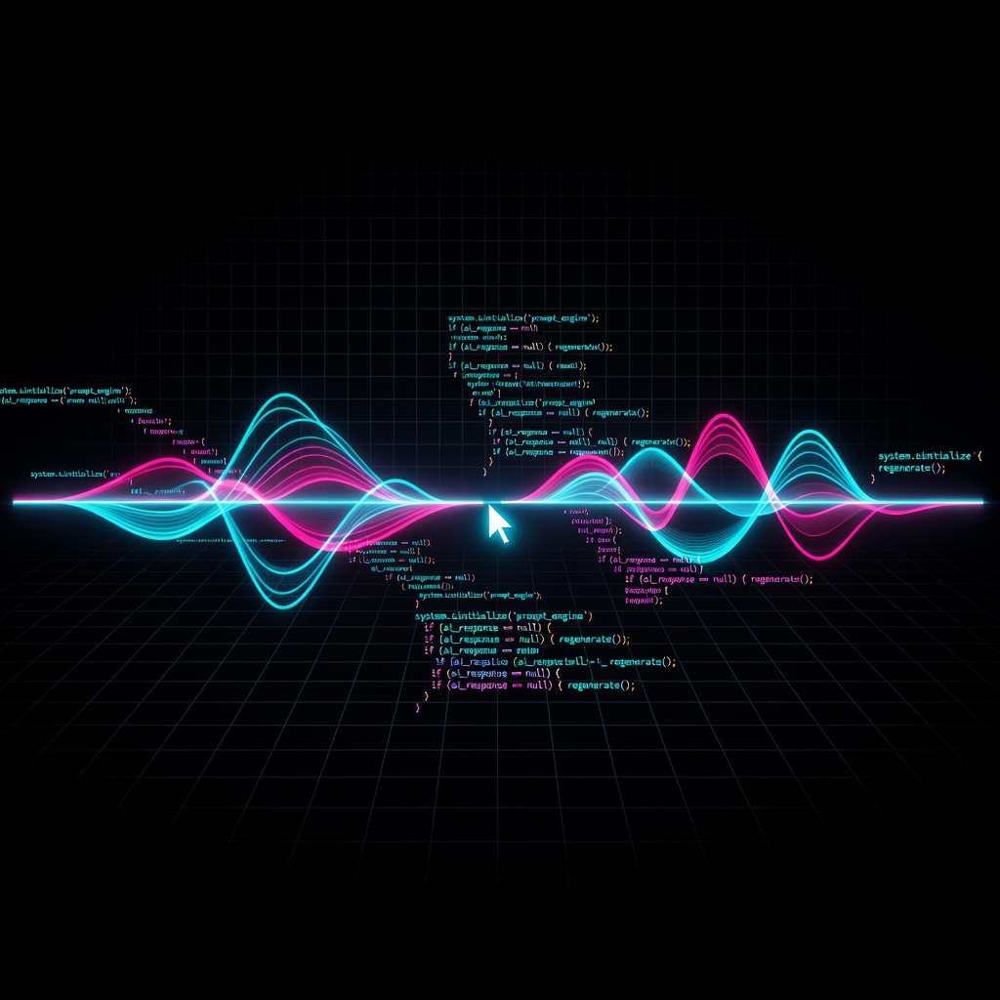

Eight leaked system prompts from Anthropic, OpenAI, Google, Cursor, Microsoft and Perplexity — torn down token by token, rebuilt into seven portable lessons, one podcast, and a field guide you can use today.
A NotebookLM-style conversation — two hosts, one surprise guest, four AI voice models. Every key lesson from all eight teardowns, in seven minutes.

Everything the eight teardowns taught, compressed into patterns you can carry into any AI project — from a weekend script to a production agent.
The smallest prompt (Perplexity, ~2K tokens) works because it only injects the product delta — everything the base model already does well is left out. Every unnecessary instruction dilutes the ones that matter.
Claude Opus scopes rules with nested XML tags; GPT-5.6 resolves conflicts with an ordered refusal cascade; Gemini layers a 5-step data-protection cascade. When instructions collide — and they will — structure is the referee.
Codex separates private reasoning, visible tool calls, and the final answer into three channels. Give the model a scratchpad — narration of every thought out loud degrades the answer.
Copilot CLI's three-layer memory (working / episodic / semantic, with a REM consolidation agent) and Cursor's auto-injected context prove: persistent memory comes from structures — files, DBs, profile blocks — injected at the right time, not from "remember this."
Copilot CLI runs a GPT orchestrator with Claude sub-agents; Cursor's rescue agent delegates to Claude Code. Specialized workers, strict boundaries (disjoint write sets), cheap scouts + frontier deciders.
Codex gates critical actions on "high-impact decisions" — undefined. Perplexity caps paragraphs at five sentences — unenforceable. Vague thresholds are the #1 failure source in every prompt we read.
Cursor's file-and-line citation contract, Codex's channel system, Perplexity's rendering contract — the winning products specify the interface between model and product, pairing instructions with scaffolding: templates, schemas, validators.
Every teardown in full — each one a complete architectural dissection with four-card analysis (✅ strengths · ⚠️ weaknesses · 🎯 SOTA · 📈 evolution). Click any card to read the full edition.
Anthropic's terminal coding agent — the pilot edition. Tool-use protocol, context compaction, and the autonomy model that set the template for every agentic prompt after it.
Phase 2 · Agentic CodingThe largest prompt in the series — OpenAI's complete behavioral codex. Ordered refusal cascade, 2,661 lines, and the maximalist philosophy: specify everything.
Phase 1 · FoundationalThe economy play — nested XML structural scoping, meta-refusal triggers, and tool-conditional epistemology. Proof that 6K tokens, structured well, outperform 28K of flat rules.
Phase 1 · FoundationalGoogle's three-prompt architecture. The 5-step user-data protection cascade — the most sophisticated in any leaked consumer prompt — plus the Interactive Widget Architect and invisible incorporation protocol.
Phase 1 · FoundationalThe IDE agent with the citation moat — every code claim cites file and line. Auto-injected context, 7 subagent types, and the first leaked cross-model rescue delegation.
Phase 2 · Agentic CodingThe multi-model fleet — a GPT orchestrator shipping Anthropic sub-agents. SQL-based session memory, three-layer memory with REM consolidation, Fleet Mode, and 6 specialized subagents.
Phase 2 · Agentic CodingThe computer-use agent. Three-channel information architecture, the Memento context-management tool, credential-free authentication, and prompt-injection defense via source-channel trust.
Phase 2 · Agentic CodingThe minimalist bet — 169 lines. A formatting engine as rendering contract, pre-computed temporal arithmetic, and the distributed system prompt: five per-surface prompts, safety layered elsewhere.
Phase 3 · Specialized AgentsNo jargon required. Six habits distilled from how the best AI teams on Earth write their instructions — written for your day-to-day, whatever you use AI for.
Teams that write AI instructions for millions of users never say "be brief." They say exactly what they want. Politeness wastes tokens; precision gets results.
The best prompts don't stack rules in paragraphs — each rule gets its own labeled section. If two rules conflict, the model can't tell which wins. Labeled boxes fix that.
OpenAI's agent prompt gives the AI a private scratchpad before answering — and the answers get measurably better. You can do the same: "Think through it step by step first, then give me the final answer."
Microsoft's Copilot doesn't say "remember our past chats." It stores notes in a database and re-injects them. For recurring work: keep a profile file ("I write in British English, I hate bullet lists") and paste it in at the start.
Copilot runs separate AI "workers" for exploring, reviewing, and executing. You can too: ask the AI to first draft an outline (scout), then critique it (reviewer), then write the final (executor). Three passes beat one mega-prompt.
Undefined terms are the #1 failure in every leaked prompt we read. Numbers are enforceable; adjectives are not. If it matters, attach a number or a hard rule to it.